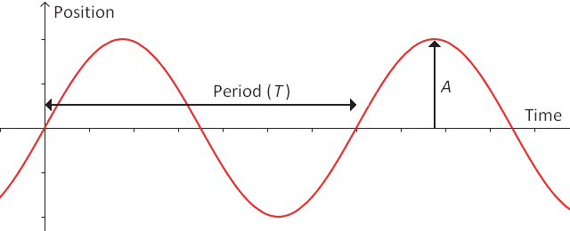

Equilibrium
An equilibrium is a position where objects experience zero net force.

- An object placed at rest at equilibrium will remain at rest there, according to Newton’s Laws.
- An equilibrium is unstable when any object close to the equilibrium experiences a net force that accelerates it away from the equilibrium position.
- Near the top of a hill, the unbalanced force produced by the gravity and normal forces points downhill, away from the equilibrium at the top.
- An equilibrium is stable when objects close to the equilibrium experience a restoring force: an unbalanced force that accelerates the object back toward equilibrium.
- Near the bottom of a valley, the gravity and normal forces produce an unbalanced force that pulls the object back toward its equilibrium at the bottom.
- The net force may be described as a restoring force because it acts to restore the equilibrium.
- Objects near a stable equilibrium will move back-and-forth across the equilibrium, as a result of their inertia which causes them to “overshoot”. This type of motion is called an oscillation.
Simple Harmonic Motion

The simplest mathematical function that can describe an oscillation is a sinusoidal (sine or cosine) function.
Motion that can be described exactly by a sinusoidal function is called simple harmonic motion (SHM).
SHM is characterized by two quantities that can be measured from the \(\vec{\mathbf d}-t\) graph:
- Amplitude (\(A\)) is the maximum distance that the object moves from its equilibrium position.
- Period (\(T\)) is the time it takes for each cycle or repetition of the motion.
- The reciprocal of period is called frequency:$$f = {1\over T}$$
- The unit of frequency is called hertz: Hz = s–1.
We will see in a future lesson that SHM occurs when the restoring force is directly proportional to the object’s distance from equilibrium.
- E.g. an object will experience exactly twice as much net force when it is 10 cm from equilibrium compared to when it is only 5 cm from equilibrium.